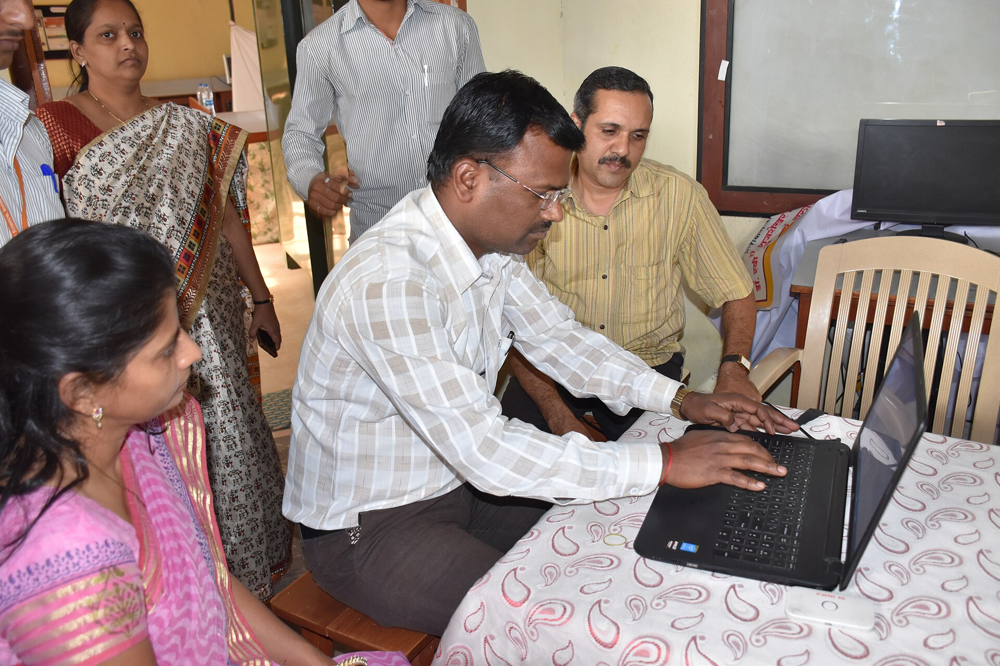

01
Design
Define learner type, course length, branding, and assessment needs.
KreatBio works with universities, training academies, and professional programs that want a structured way to teach sequencing analysis through guided lessons, cohort oversight, and review-ready reporting.

Define learner type, course length, branding, and assessment needs.
Set seats, instructor access, learner routing, and launch timing.
Activate the cohort, invite learners, and begin the first delivery wave.
Review completion, progress, and the next program cycle with the institution.
Built for departments and centers that want sequencing analysis training inside semester teaching or structured lab programs.
Useful for private academies and specialist training groups that want guided bioinformatics lessons without building the curriculum from scratch.
Suitable for workforce upskilling, lab-transition training, and modular genomics education outside a full degree program.
Pricing usually depends on learner seat count, program length, branding scope, reporting needs, and whether KodaPure kits are bundled into the program review.